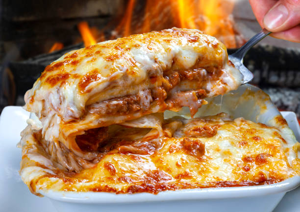

Home
Freya's Lasagna

An Italian staple made out of alternating layers of pasta, cheese and meaty tomato sauce.
A classic dish made traditionally out of Bechamél sauce, tomato sauce with pork and/or beef, fresh pasta and fresh
mozzarella stacked alternately and baked until golden and gooey perfection.
Ingredients
- Pre-cooked lasagna Pasta
- Canned Italian Tomatoes
- Carrots
- Celery
- Onions
- Garlic
- Beef and/or Pork
- Herbs
- High smoke point Oil
- All-purpose Flour
- Butter
- Whole Milk
- Salt & Pepper
- Fresh Mozzarella
Instructions
- Red Sauce
- Start by sealing the meat in a large pan with the cooking oil, on high heat.
- When the desired level of brownness is achieved add the diced carrots, celery and onions.
- Reduce the pan to a low heat and add the garlic.
- Add the canned tomatoes along with the same measurement of the can in water.
- Let simmer for about two hours, add herbs and correct the salt and pepper if needed.
- Bechamél Sauce
- In a medium sized pan add the butter.
- When it starts to get a bit brown add in three to four teaspoons of flour. Stir until the flour itself
starts to brown too.
- Start adding the milk little by little, always stirring. Correct salt and pepper if needed. When it develops
a rich purée looking appearance it is ready,
- Assembly
- In an oven-ready tray add the red sauce, pasta, bechamél sauce and mozzarella in this order.
- Repeat as many layers as needed.
- Bake in the oven at low-medium heat until golden.
- Decorate with more herbs or Parmesan cheese.
Tips
- You can make both sauces in this recipe in batches for freezing and future use.
- For really stacked lasagnas it might be a good idea to bake them covered in tin foil to ensure proper cooking before browning.
- Let it cool for about 30 minutes before slicing, the sauce will adhere better to the pasta while it cools.